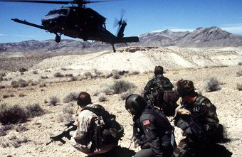
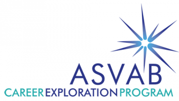

1. The top 3 colleges want to attend are Benedict College, Morris College, and Allen University.
2. After I graduate from college, I plan to go into the military. I'm mainly looking at the Amry or the Airforce.
3. I learned that Morris College has an Amry ROTC and it makes want to attend that college.
4. The average salary for Army recruit as an E-1 is $19,660.
5. As an E-1 (Airman Basic) in the Air Force your monthly pay is $1,638.
5.The dream college I want to attend is Virginia State University.

6. After I graduate high school, I plan to go to college and major in engineering and join the military after I graduate.
7. I plan to serve 20 years in the Airforce or the Army after college.

8.To be enlisted into the Airforce, I have to get a 36 on my ASVAB.
